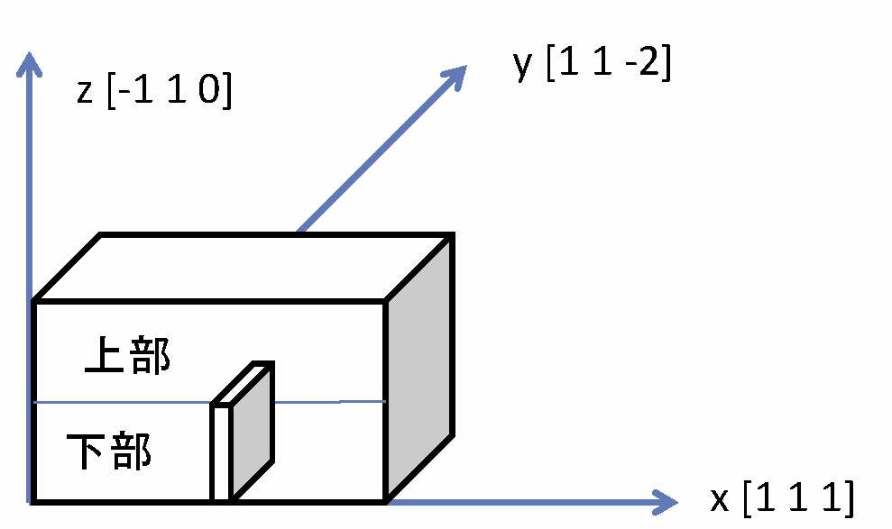
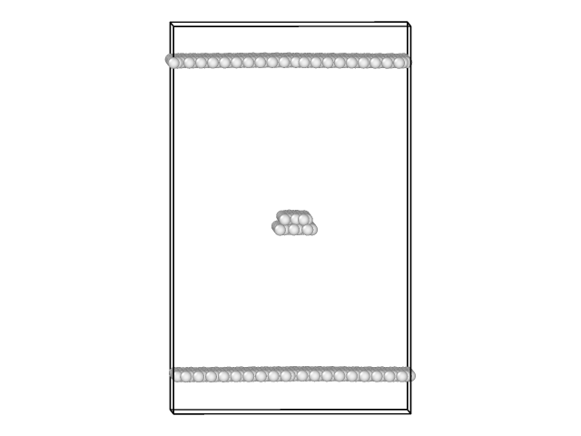

刃状転位を挿入する はじめに
このコースの最も重要な目的はLAMMPSを用いてMDのチュートリアルを行うことなので、材料力学の詳細について大きなスペースをさくことはできない。しかしながら、受講者が材料力学理論をよく理解していることを前提とするのも不親切だろう。よって、以下では今回の講座に必要な最低限の材料力学の基礎について述べておく。転位と塑性変形
さて、物質の変形は2つの種類に大別できる。一つは、外力が消滅すると元の形状に戻る変形で、弾性変形と呼ばれる。もう一つは外力が消滅しても元に戻らず変形された状態を保持される変形で、塑性変形と呼ばれる。この講座に関係しているのは後者の方である。刃状転位
転位にはいくつかの種類があり、ここで学ぶのは刃状転位と呼ばれるものである。一言で説明すると「結晶の中に1つの余分な面が入っている格子欠陥」である。と言われても知らない人は何を言われているのかピンとこないだろう。まずは下の図を見て欲しい。Fig. 1: 刃状転位を挿入するためのイメージ x、y、z 方向がそれぞれ[100]、[010]、[001] であったが、少し複雑な方向の直行系になっていることに注意しよう。[111] である。その方向に原子は周期的に並んでいるが、その1周期分がその板に含まれているしよう。その板に含まれた原子を全て削除するとする。その後、構造緩和すれば削除した部分の両側の面が近づいてきて結合は回復する。その結果、直方体上部には1面多く存在することになり、"余り"ができてしまう。よって上部と下部の境界には、結晶構造がうまく整合しない部分ができてしまう。整合しない部分はy方向の線状となり、これが刃状転位である。1/2[111] になる。このベクトルを一般化した表記1/2<111> も含めて、これらをこの転位のバーガーズベクトルと呼ぶ。またこの場合、転位の方向は図からわかるように<11-2> 方向である。またこの講座ではふれないが、この転位がz 面[-110] 内で並進運動することによりその面がすべる、すなわち塑性変形する。よって転位を特定するのにすべり面の情報もいれて1/2<111>{110} と表記することもある。スクリプトの実行
上記要領で刃状転位を鉄結晶に挿入する手続きをスクリプトにしたものがscript ディレクトリ中のbccFe_edge_relax.lcm である。これをLAMMPSで実行するには以下のコマンドで行う。
$ lmp_serial -in script/bccFe_edge_relax.lcm
dumpコマンドで出力させたファイルbccFe_edge_relax.out をOVITOにロードして計算がうまくいったか確認しよう。ファイルをよみこんだら、画面左下のスライダーを右に動かし最終ステップの状態にする。その後、照射損傷をモデル化する で紹介したCNA解析と同じようにAdd modificationを行う。CNA of an edge dislocation using OVITO に詳しい画面上の操作手続きを書いたので、わからなければそちらを参照して欲しい。下の図のように真ん中に線状のBCC構造からの乱れが観察されば成功である。Fig. 2: OVITOのCNA解析で可視化された刃状転位 スクリプトの説明
基本結晶を作成する
さていつものようにスクリプトを1行ずつ見ていくことにする。
units metal
boundary p p p
atom_style atomic
これはいつもでてくる最初の3行である。単位、境界条件、原子情報の属性を定義する。
lattice bcc 2.83 orient x 1 1 1 orient y 1 1 -2 orient z -1 1 0
region box block 0 10 0 9 0 20 units lattice
create_box 1 box
create_atoms 1 box
まずlatticeコマンドであるが上の図のx、y、z 方向に従ってコマンド中の方向が定義されていることに注意しよう。regionコマンドではシミュレーションに使うボックスを定義する。ただし、units latticeとなっているが単位は格子定数ではなく各結晶方向の1周期が単位になることに注意する。なお、過去の講義では格子定数と各結晶方向の1周期が一致していた。上下に真空部分を作る
region lower_vacuum block INF INF INF INF INF 1.9
delete_atoms region lower_vacuum
region upper_vacuum block INF INF INF INF 18.1 INF
delete_atoms region upper_vacuum
次はせん断変形を行う の講座にも出てきたが、z 方向の最下部と最上部に真空を入れて分離させる手続きである。最初のregionコマンドではlower_vacuum という名前の最下部の領域を定義し、その次のdelete_atomsではその領域に含まれる原子を消去している。続く2行も同じ手続きを最上部に対して行っている。特にわかりにくいことはないだろう。
刃状転位を挿入する
region edge_dis block 4.9 5.35 INF INF 0 9.8
delete_atoms region edge_dis
この2行ではFig. 1 で示した直方体下部の薄い板の部分をregionで定義し、その領域に属する全ての原子を削除している。この理由はすでに説明した。
pair_style eam/fs
pair_coeff * * ./potentials/Fe_mm.eam.fs Fe
neigh_modify every 1 delay 0 check yes
dump 1 all custom 100 bcc_edge_relax.out mass type xs ys zs
reset_timestep 0
fix 1 all box/relax iso 0.0 vmax 0.001
thermo 100
thermo_style custom step pe lx ly lz pxx pyy pzz
min_style cg
minimize 1e-25 1e-12 50000 10000
ここから先は何度か説明した構造緩和の計算であり、ポテンシャルの定義、fix ... box/relaxコマンドで体積緩和を指定、min_styleコマンドで共役勾配法を指定、そしてminimizeコマンドで最終的に構造緩和を実行している。以前の講座で説明が足りているはずなので、ここでは詳細を繰り返さない。コマンドの意味がわからない受講者は構造緩和を行う に戻ることをおすすめする。せん断変形を行う で学んだスクリプトなどを組み合わせれば物質の塑性変形を原子レベルでモデリングできるとともに、材料の強度などを評価する方法となる。目次へ 前はLAMMPSの外部で初期値を作る 次はらせん転位を挿入する